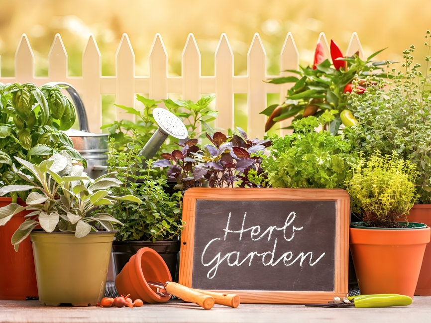

Welcome to Ayush Oasis
Your gateway to natural healing and wellness. Discover the power of herbal plants, the essence of Ayurveda, and the practice of Yoga to rejuvenate your mind, body, and soul.
Your gateway to natural healing and wellness. Discover the power of herbal plants, the essence of Ayurveda, and the practice of Yoga to rejuvenate your mind, body, and soul.
Navigate an interactive garden environment where each plant is showcased with descriptions, traditional uses, and health benefits.

Interactive Learning: Engaging formats like quizzes and videos can enhance knowledge retention.
Contributions to Herbal Research: Collecting data on user interactions to contribute to research on herbal medicine.
Increased awareness of natural remedies may reduce reliance on pharmaceuticals.
Cutting-edge web technologies enhance user engagement and set benchmarks for future educational platforms.
Showcasing traditional uses of herbs, respecting indigenous knowledge and practices.
Gamification: Implement quizzes or challenges related to herbal knowledge to engage users.
Use AR.js or WebXR for augmented reality experiences, allowing users to interact with herbs in their own space.
Track user engagement with tools like Google Analytics to improve the user experience.
Optimize content for search engines and enable easy sharing on social media platforms like Instagram and Facebook.